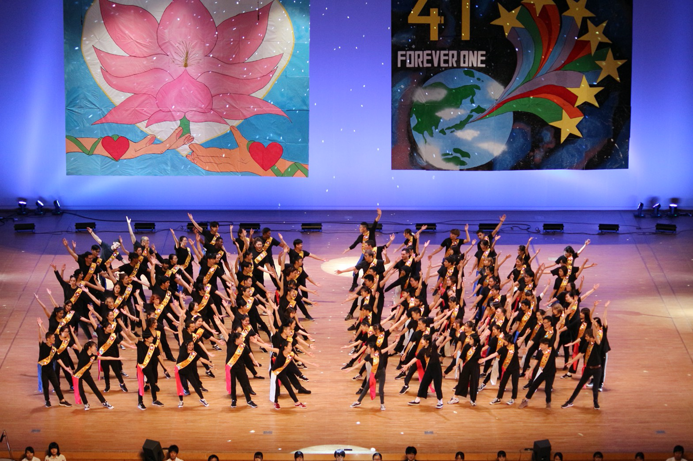

留喫茶の部門には
- 書記部門
- Secretary department
- 創立者より「世界平和の縮図」というお言葉をいただいた留学生喫茶から,
- 今度は留学生が創立者を招こうという志を実現する部門。"創立者と留学生の架け橋"
- 招待状

総括部門
- 総括部門
- General Managing Department
- 留学生喫茶の全般的な運営を担当し、留学生たちをサポートしていく部門
衛生部門
- 衛生部門
- Sanitary department
- 日本のゴミ分別方法を熟知し、創大祭が安全に行われるようサポートする部門
日スタ
- 日本人スタッフ
- Japanese Step department
- 創大祭で日本人スタッフと留学生の架け橋になってくれる部門
イベント部門
- イベント部門
- EVENT Department
- 創大祭当日の行事例え、昼コンサートや夜コンサートなどをサポートする部門
PR部門
- PR部門
- PR Department
- 留学生喫茶のロゴをデザインする部門
記録部門
- 記録部門
- Photography department
- 留学生喫茶の全てのことを記録する部門
- ストーリーブック

店責部門
- 店舗責任部門
- Store Managing Department
- 店舗責任者は、料理を通して、各国の文化をつなぐ役割で、留学生喫茶の料理や店舗に関するすべての活動を計画し、運営する部門
キフェス
- 記念フェスティバル部門
- KIFEST
- 創価栄光の集いで,約100人の留学生のパフォーマンスを担当し,
留学生を支えていく部門
- 約100人の留学生のパフォーマンス

一般部門
- 一般設営部門
- General Department
- 留学生舞台の背景デザイン,
留学生喫茶場のデコレーション,
各国店舗の看板作り手伝い,
店舗のメニュー看板作る部門
特設部門
- 特殊設営部門
- construction Department
- 日陰で各部門をサポートしながら苦労する部門
会計部門
- 会計部門
- Accounting Department
- 予算管理する部門。
^